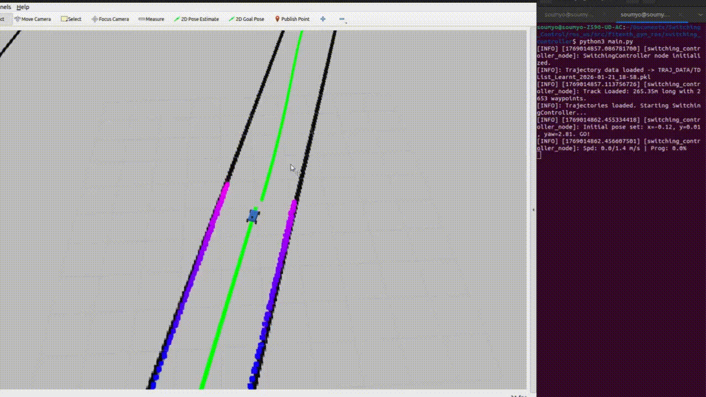
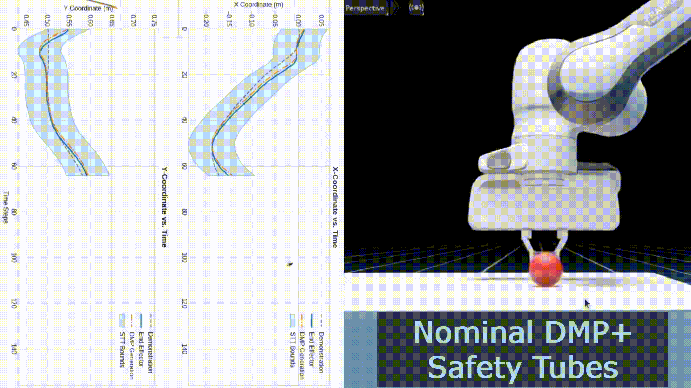
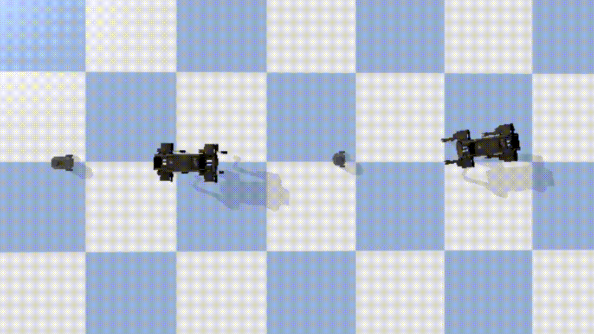
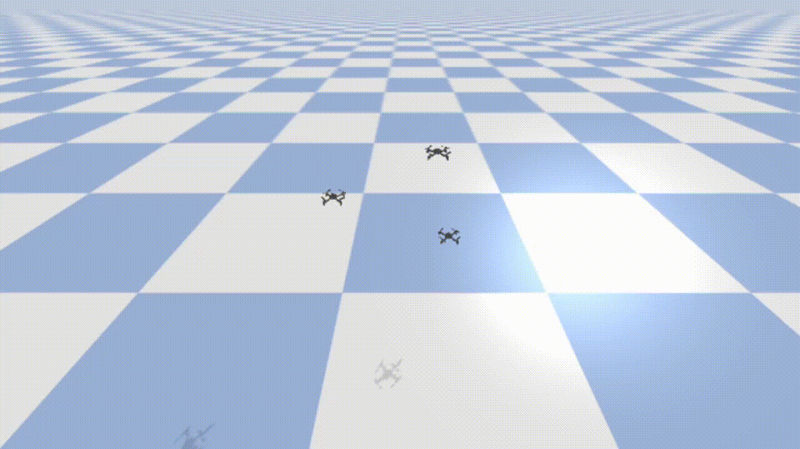
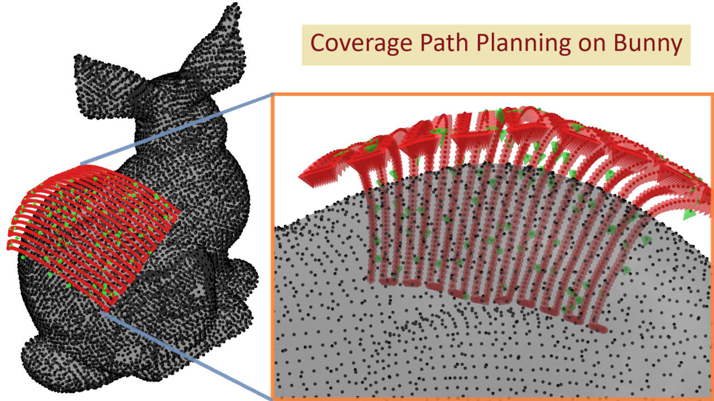
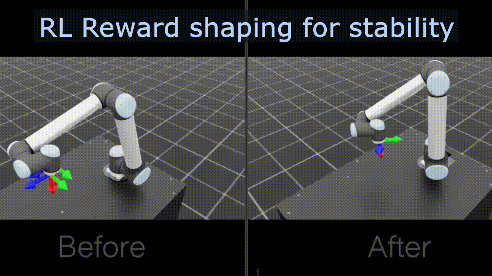
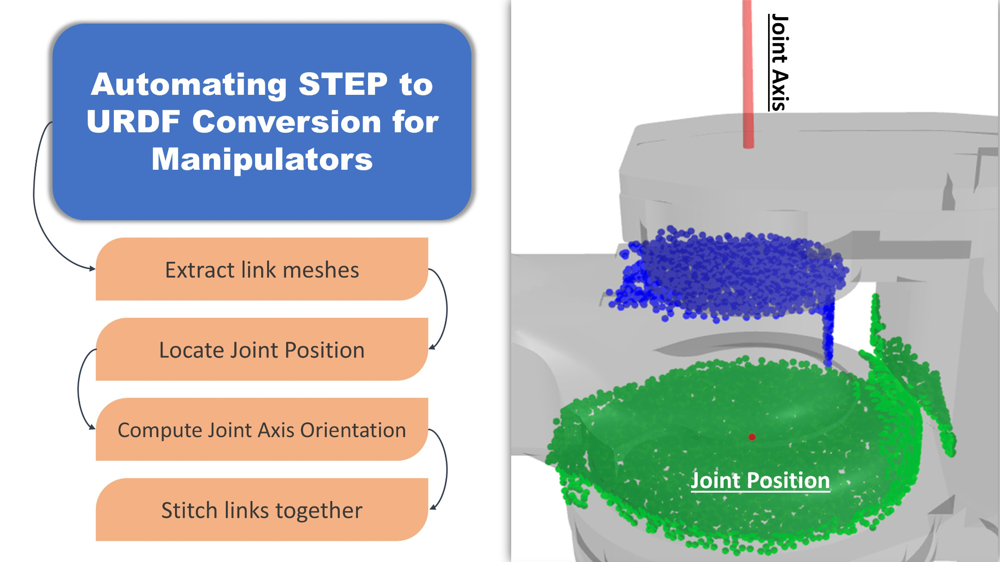
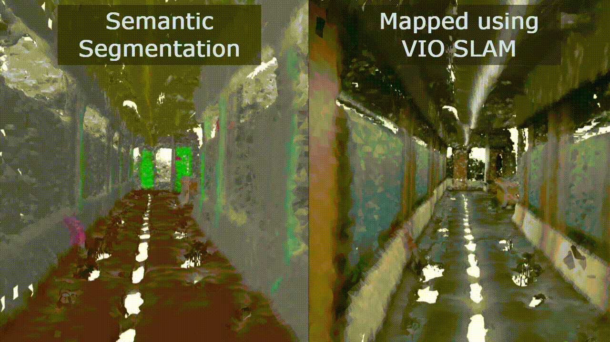
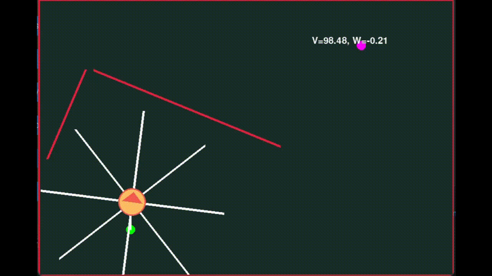
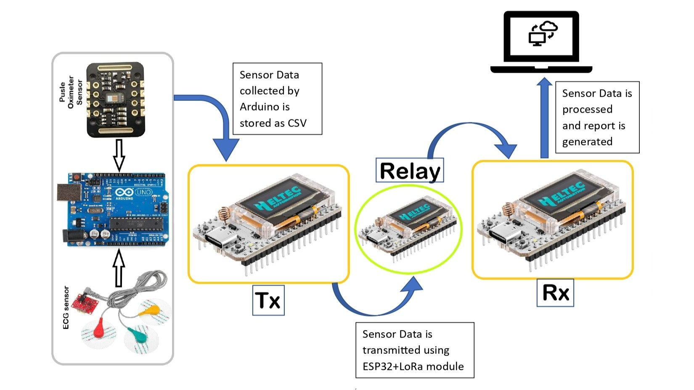

Research Projects
Selected works demonstrating expertise in optimal control, formal safety verification, and multi-agent coordination deployed on physical hardware.
- All
- Ongoing
- Published
- Control
- Learning
- Perception

{kind=link}
{kind=link}
Optimal Trajectory Synthesis via Multi-Expert Switching
- Developed a hierarchical control stack using Gaussian Mixture Models (GMM) to discretize track topology into adaptive velocity regimes.
- Implemented a Dynamic Programming solver for optimal expert switching, ensuring kinematic feasibility and jerk minimization.
- Deployed on NVIDIA Jetson for high-speed racing at Roboracer 2025 (IIT Bombay) as part of M.Tech thesis.

{kind=link}
{kind=link}
SafeDMPs: Integrating Formal Safety with DMPs for Adaptive HRI
- Synthesized a modular safety framework merging Dynamic Movement Primitives with Spatio-Temporal Tubes.
- Derived closed-form safety feedback laws that outperform CBF-QP baselines (99.97% faster compute, 48% lower memory).
- Validated on Franka Emika Research 3 hardware for adaptive Human-Robot Interaction.

{kind=link}
Robot Conga: A Leader-Follower Walking Approach to Sequential Path Following in Multi-Agent Systems
- Engineered a leader-follower formation controller using spatial displacement logic for precise inter-agent spacing.
- Enabled dynamic path replanning without destabilizing follower trajectories in localized control environments.
- Validated on TurtleBot3 (wheeled) and Laikago (quadruped) platforms via simulation.

{kind=link}
{kind=link}
Swarm Pass: Safe Swarm Traversal via C3BF
- Designed a hierarchical collision avoidance framework for quadrotor swarms using Collision-Cone (C3BF).
- Integrated High-Order Control Barrier Functions (HOCBF) to ensure safety through tight spatial bottlenecks.
- Validated real-time QP safety filters in PyBullet and Crazyflie 2.1 simulation environment.

{kind=link}
Optimized CPP for Complex Geometries
- Architected Coverage Path Planning algorithms for non-planar aircraft surfaces using Gaussian parametrization.
- Utilized cylindrical coordinate transformations to enable structured traversal of complex curved geometries.
- Integrated automated cavity detection pipelines to ensure collision-free toolpath generation for industrial tasks.

{kind=link}
Smooth Goal-Reaching for Manipulators
- Fine-tuned Reinforcement Learning agents (PPO) in NVIDIA Isaac Lab for precision goal-reaching tasks.
- Engineered dense reward functions to minimize joint jerk, achieving smooth trajectories for industrial manipulators.
- Executed successful Sim-to-Real transfer on physical UR10 cobots, bridging the simulation gap.

{kind=link}
Geometry-Driven Robot Model Synthesis
- Built an automated pipeline to convert raw STL meshes into kinematic URDF models using nearest-neighbor analysis.
- Applied Principal Component Analysis (PCA) and DBSCAN to infer joint axes, origins, and linkage hierarchies.
- Streamlined the simulation integration workflow by reducing manual rigging effort for custom end-effectors.

{kind=link}
Metric-Semantic 3D Reconstruction
- Metric-semantic SLAM using Kimera-VIO-Semantics and Intel RealSense D455 for dense indoor 3D mapping
- Transformer-based semantic fusion using SegFormer for scene segmentation and object-aware 3D reconstruction
- Evaluated trajectory accuracy via ATE, validating robust loop closure in large-scale corridors

Experiments on Intersection Management
- Deployed an RL-based scheduler for non-signalized intersection management on a fleet of Pololu robots.
- Designed a low-latency communication protocol over XBee modules to synchronize crossing orders under noise.
- Optimized hardware-level control loops to match simulation results in physical experiments.

{kind=link}
Chromotion: GA-PID Navigator
- Implemented a Genetic Algorithm to optimize high-dimensional PID controllers for autonomous navigation using 2D ray-casting.
- Built a multi-processed Pygame simulator that evaluates population fitness in parallel across CPU cores.
- Designed a modern dashboard for real-time obstacle creation, weight management, and fitness heatmap visualization.

{kind=link}
Multihop LoRa Healthcare Network
- Engineered a low-power, multi-hop LoRa mesh network for long-range telemetry in resource-constrained environments.
- Developed an end-to-end pipeline for acquisition, compression, and transmission of physiological data (ECG, SpO₂).
- Implemented robust packet forwarding algorithms on ESP32/Arduino nodes to ensure reliability in lossy channels.
Collaborators & More...
Brilliant minds and talented peers I have had the privilege to work with.
Arghyadeep Barat
BE ETCE, JU
Had fun working together on Chromotion.